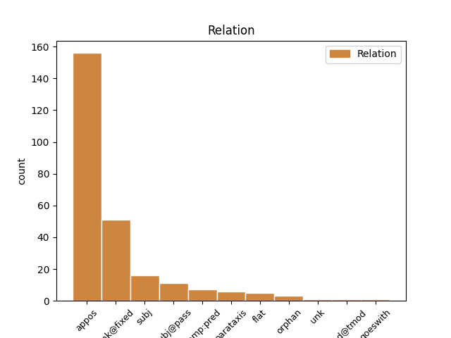
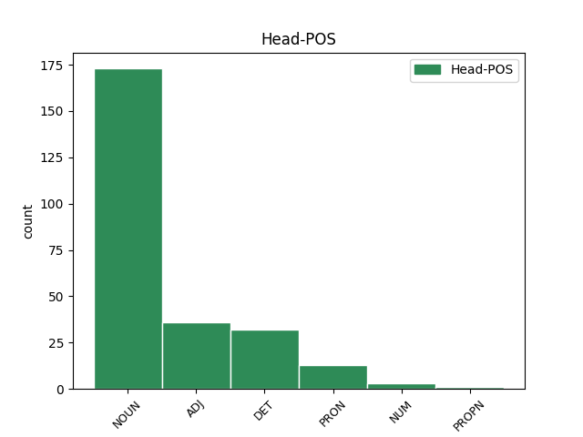
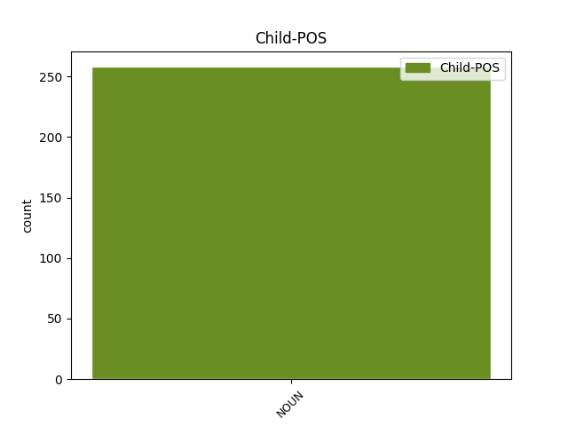

Distribution of features within this leaf



Agreement Rules sorted by frequency.
- When the dependent token is the appositional modifier(appos) of the head token, and the head token is NOUN and the dependent token is NOUN.
1 Un _ _ _ _ 0 _ _ _
2 recensământ _ _ _ _ 0 _ _ _
3 este _ _ _ _ 0 _ _ _
4 o _ _ _ _ 0 _ _ _
5 enumerare _ _ _ _ 0 _ _ _
6 sau _ _ _ _ 0 _ _ _
7 o _ _ _ _ 0 _ _ _
8 listare _ _ _ _ 0 _ _ _
9 a _ _ _ _ 0 _ _ _
10 fiecărui _ _ _ _ 0 _ _ _
11 element _ _ _ _ 0 _ _ _
12 al _ _ _ _ 0 _ _ _
13 populației _ _ _ _ 0 _ _ _
14 împreună _ _ _ _ 0 _ _ _
15 cu _ _ _ _ 0 _ _ _
16 data dată NOUN Ncfsry Case=Acc,Nom|Definite=Def|Gender=Fem|Number=Sing 0 _ _ _
17 ( _ _ _ _ 0 _ _ _
18 valoarea valoare NOUN Ncfsry Case=Acc,Nom|Definite=Def|Gender=Fem|Number=Sing 16 appos _ _
19 variabilei _ _ _ _ 0 _ _ _
20 ) _ _ _ _ 0 _ _ _
21 corespunzătoare _ _ _ _ 0 _ _ _
22 elementului _ _ _ _ 0 _ _ _
23 . _ _ _ _ 0 _ _ _
1 Pe _ _ _ _ 0 _ _ _
2 de _ _ _ _ 0 _ _ _
3 altă alt DET Di3fsr---e Case=Acc,Nom|Gender=Fem|Number=Sing|Person=3|Position=Prenom|PronType=Ind 0 _ _ _
4 parte parte NOUN Ncfsrn Case=Acc,Nom|Definite=Ind|Gender=Fem|Number=Sing 3 unk@fixed _ SpaceAfter=No
5 , _ _ _ _ 0 _ _ _
6 el _ _ _ _ 0 _ _ _
7 trebuie _ _ _ _ 0 _ _ _
8 să _ _ _ _ 0 _ _ _
9 fie _ _ _ _ 0 _ _ _
10 apropiat _ _ _ _ 0 _ _ _
11 de _ _ _ _ 0 _ _ _
12 problema _ _ _ _ 0 _ _ _
13 de _ _ _ _ 0 _ _ _
14 rezolvat _ _ _ _ 0 _ _ _
15 , _ _ _ _ 0 _ _ _
16 astfel _ _ _ _ 0 _ _ _
17 încât _ _ _ _ 0 _ _ _
18 soluția _ _ _ _ 0 _ _ _
19 problemei _ _ _ _ 0 _ _ _
20 să _ _ _ _ 0 _ _ _
21 fie _ _ _ _ 0 _ _ _
22 exprimată _ _ _ _ 0 _ _ _
23 direct _ _ _ _ 0 _ _ _
24 și _ _ _ _ 0 _ _ _
25 concis _ _ _ _ 0 _ _ _
26 . _ _ _ _ 0 _ _ _
1 în _ _ _ _ 0 _ _ _
2 timp _ _ _ _ 0 _ _ _
3 ce _ _ _ _ 0 _ _ _
4 latrina latrină NOUN Ncfsry Case=Acc,Nom|Definite=Def|Gender=Fem|Number=Sing 6 subj@pass _ _
5 trebuie _ _ _ _ 0 _ _ _
6 golită golit ADJ Afpfsrn Case=Acc,Nom|Definite=Ind|Degree=Pos|Gender=Fem|Number=Sing 0 _ _ _
7 iar _ _ _ _ 0 _ _ _
8 , _ _ _ _ 0 _ _ _
9 în _ _ _ _ 0 _ _ _
10 aproximativ _ _ _ _ 0 _ _ _
11 15 _ _ _ _ 0 _ _ _
12 ani _ _ _ _ 0 _ _ _
13 , _ _ _ _ 0 _ _ _
14 gunoiul _ _ _ _ 0 _ _ _
15 va _ _ _ _ 0 _ _ _
16 fi _ _ _ _ 0 _ _ _
17 DESCOMPUS _ _ _ _ 0 _ _ _
18 și _ _ _ _ 0 _ _ _
19 poate _ _ _ _ 0 _ _ _
20 fi _ _ _ _ 0 _ _ _
21 cărat _ _ _ _ 0 _ _ _
22 și _ _ _ _ 0 _ _ _
23 împrăștiat _ _ _ _ 0 _ _ _
24 pe _ _ _ _ 0 _ _ _
25 pământurile _ _ _ _ 0 _ _ _
26 fermelor _ _ _ _ 0 _ _ _
27 învecinate _ _ _ _ 0 _ _ _
28 . _ _ _ _ 0 _ _ _
1 După _ _ _ _ 0 _ _ _
2 1860 _ _ _ _ 0 _ _ _
3 , _ _ _ _ 0 _ _ _
4 clădirile _ _ _ _ 0 _ _ _
5 de _ _ _ _ 0 _ _ _
6 lemn _ _ _ _ 0 _ _ _
7 și _ _ _ _ 0 _ _ _
8 chirpici _ _ _ _ 0 _ _ _
9 au _ _ _ _ 0 _ _ _
10 fost _ _ _ _ 0 _ _ _
11 înlocuite _ _ _ _ 0 _ _ _
12 treptat _ _ _ _ 0 _ _ _
13 de _ _ _ _ 0 _ _ _
14 cele _ _ _ _ 0 _ _ _
15 din _ _ _ _ 0 _ _ _
16 piatră _ _ _ _ 0 _ _ _
17 și _ _ _ _ 0 _ _ _
18 cărămidă _ _ _ _ 0 _ _ _
19 , _ _ _ _ 0 _ _ _
20 și _ _ _ _ 0 _ _ _
21 rețeaua rețea NOUN Ncfsry Case=Acc,Nom|Definite=Def|Gender=Fem|Number=Sing 24 subj _ _
22 de _ _ _ _ 0 _ _ _
23 străzi _ _ _ _ 0 _ _ _
24 îmbunătățită îmbunătățit ADJ Afpfsrn Case=Acc,Nom|Definite=Ind|Degree=Pos|Gender=Fem|Number=Sing 0 _ _ _
25 . _ _ _ _ 0 _ _ _
1 Vlahuță _ _ _ _ 0 _ _ _
2 era _ _ _ _ 0 _ _ _
3 pentru _ _ _ _ 0 _ _ _
4 noi eu PRON Pp1-pr--------s Case=Acc,Nom|Number=Plur|Person=1|PronType=Prs|Strength=Strong 0 _ _ _
5 , _ _ _ _ 0 _ _ _
6 elevii elev NOUN Ncmpry Case=Acc,Nom|Definite=Def|Gender=Masc|Number=Plur 4 appos _ SpaceAfter=No
7 , _ _ _ _ 0 _ _ _
8 unul _ _ _ _ 0 _ _ _
9 dintre _ _ _ _ 0 _ _ _
10 cei _ _ _ _ 0 _ _ _
11 mai _ _ _ _ 0 _ _ _
12 mari _ _ _ _ 0 _ _ _
13 poeți _ _ _ _ 0 _ _ _
14 pe _ _ _ _ 0 _ _ _
15 care _ _ _ _ 0 _ _ _
16 -i _ _ _ _ 0 _ _ _
17 cunoșteam _ _ _ _ 0 _ _ _
18 . _ _ _ _ 0 _ _ _
1 Chiar _ _ _ _ 0 _ _ _
2 și _ _ _ _ 0 _ _ _
3 în _ _ _ _ 0 _ _ _
4 aceste _ _ _ _ 0 _ _ _
5 condiții _ _ _ _ 0 _ _ _
6 , _ _ _ _ 0 _ _ _
7 au _ _ _ _ 0 _ _ _
8 rămas _ _ _ _ 0 _ _ _
9 în _ _ _ _ 0 _ _ _
10 picioare _ _ _ _ 0 _ _ _
11 multe _ _ _ _ 0 _ _ _
12 clădiri _ _ _ _ 0 _ _ _
13 importante _ _ _ _ 0 _ _ _
14 și _ _ _ _ 0 _ _ _
15 , _ _ _ _ 0 _ _ _
16 pe _ _ _ _ 0 _ _ _
17 bună bun ADJ Afpfsrn Case=Acc,Nom|Definite=Ind|Degree=Pos|Gender=Fem|Number=Sing 0 _ _ _
18 dreptate dreptate NOUN Ncfsrn Case=Acc,Nom|Definite=Ind|Gender=Fem|Number=Sing 17 unk@fixed _ SpaceAfter=No
19 , _ _ _ _ 0 _ _ _
20 Iașii _ _ _ _ 0 _ _ _
21 sunt _ _ _ _ 0 _ _ _
22 considerați _ _ _ _ 0 _ _ _
23 un _ _ _ _ 0 _ _ _
24 adevărat _ _ _ _ 0 _ _ _
25 muzeu _ _ _ _ 0 _ _ _
26 ; _ _ _ _ 0 _ _ _
27 în _ _ _ _ 0 _ _ _
28 fiecare _ _ _ _ 0 _ _ _
29 colț _ _ _ _ 0 _ _ _
30 al _ _ _ _ 0 _ _ _
31 său _ _ _ _ 0 _ _ _
32 se _ _ _ _ 0 _ _ _
33 simt _ _ _ _ 0 _ _ _
34 urmele _ _ _ _ 0 _ _ _
35 trecerii _ _ _ _ 0 _ _ _
36 unei _ _ _ _ 0 _ _ _
37 personalități _ _ _ _ 0 _ _ _
38 de _ _ _ _ 0 _ _ _
39 seamă _ _ _ _ 0 _ _ _
40 a _ _ _ _ 0 _ _ _
41 literaturii _ _ _ _ 0 _ _ _
42 , _ _ _ _ 0 _ _ _
43 științei _ _ _ _ 0 _ _ _
44 , _ _ _ _ 0 _ _ _
45 filozofiei _ _ _ _ 0 _ _ _
46 , _ _ _ _ 0 _ _ _
47 istoriei _ _ _ _ 0 _ _ _
48 sau _ _ _ _ 0 _ _ _
49 politicii _ _ _ _ 0 _ _ _
50 românești _ _ _ _ 0 _ _ _
51 . _ _ _ _ 0 _ _ _
1 Această _ _ _ _ 0 _ _ _
2 corecție _ _ _ _ 0 _ _ _
3 a _ _ _ _ 0 _ _ _
4 constantei _ _ _ _ 0 _ _ _
5 Rydberg _ _ _ _ 0 _ _ _
6 produce _ _ _ _ 0 _ _ _
7 o _ _ _ _ 0 _ _ _
8 deplasare _ _ _ _ 0 _ _ _
9 a _ _ _ _ 0 _ _ _
10 spectrului _ _ _ _ 0 _ _ _
11 în _ _ _ _ 0 _ _ _
12 cazul _ _ _ _ 0 _ _ _
13 diferiților _ _ _ _ 0 _ _ _
14 izotopi _ _ _ _ 0 _ _ _
15 , _ _ _ _ 0 _ _ _
16 numită numit ADJ Afpfsrn Case=Acc,Nom|Definite=Ind|Degree=Pos|Gender=Fem|Number=Sing 0 _ _ _
17 deplasare deplasare NOUN Ncfsrn Case=Acc,Nom|Definite=Ind|Gender=Fem|Number=Sing 16 comp:pred _ _
18 izotopică _ _ _ _ 0 _ _ _
19 . _ _ _ _ 0 _ _ _
1 Anexa anexă NOUN Ncfsry Case=Acc,Nom|Definite=Def|Gender=Fem|Number=Sing 4 parataxis _ _
2 II _ _ _ _ 0 _ _ _
3 : _ _ _ _ 0 _ _ _
4 Convențiile convenție NOUN Ncfpry Case=Acc,Nom|Definite=Def|Gender=Fem|Number=Plur 0 _ _ _
5 referitoare _ _ _ _ 0 _ _ _
6 la _ _ _ _ 0 _ _ _
7 proprietatea _ _ _ _ 0 _ _ _
8 intelectuală _ _ _ _ 0 _ _ _
9 , _ _ _ _ 0 _ _ _
10 industrială _ _ _ _ 0 _ _ _
11 și _ _ _ _ 0 _ _ _
12 comercială _ _ _ _ 0 _ _ _
13 menționate _ _ _ _ 0 _ _ _
14 la _ _ _ _ 0 _ _ _
15 articolul _ _ _ _ 0 _ _ _
16 15 _ _ _ _ 0 _ _ _
17 [ _ _ _ _ 0 _ _ _
18 articolul _ _ _ _ 0 _ _ _
19 39 _ _ _ _ 0 _ _ _
20 alineatul _ _ _ _ 0 _ _ _
21 ( _ _ _ _ 0 _ _ _
22 1 _ _ _ _ 0 _ _ _
23 ) _ _ _ _ 0 _ _ _
24 , _ _ _ _ 0 _ _ _
25 APC _ _ _ _ 0 _ _ _
26 Tadjikistan _ _ _ _ 0 _ _ _
27 ] _ _ _ _ 0 _ _ _
28 . _ _ _ _ 0 _ _ _
1 În _ _ _ _ 0 _ _ _
2 ultimii _ _ _ _ 0 _ _ _
3 ani _ _ _ _ 0 _ _ _
4 , _ _ _ _ 0 _ _ _
5 România _ _ _ _ 0 _ _ _
6 a _ _ _ _ 0 _ _ _
7 devenit _ _ _ _ 0 _ _ _
8 o _ _ _ _ 0 _ _ _
9 destinație _ _ _ _ 0 _ _ _
10 preferată _ _ _ _ 0 _ _ _
11 pentru _ _ _ _ 0 _ _ _
12 mulți _ _ _ _ 0 _ _ _
13 europeni _ _ _ _ 0 _ _ _
14 ( _ _ _ _ 0 _ _ _
15 mai _ _ _ _ 0 _ _ _
16 mult _ _ _ _ 0 _ _ _
17 de _ _ _ _ 0 _ _ _
18 60 _ _ _ _ 0 _ _ _
19 % _ _ _ _ 0 _ _ _
20 România _ _ _ _ 0 _ _ _
21 oferă _ _ _ _ 0 _ _ _
22 și _ _ _ _ 0 _ _ _
23 atracții _ _ _ _ 0 _ _ _
24 turistice _ _ _ _ 0 _ _ _
25 naturale _ _ _ _ 0 _ _ _
26 , _ _ _ _ 0 _ _ _
27 precum _ _ _ _ 0 _ _ _
28 Delta _ _ _ _ 0 _ _ _
29 Dunării _ _ _ _ 0 _ _ _
30 , _ _ _ _ 0 _ _ _
31 Porțile _ _ _ _ 0 _ _ _
32 de _ _ _ _ 0 _ _ _
33 Fier _ _ _ _ 0 _ _ _
34 , _ _ _ _ 0 _ _ _
35 Peștera peșteră NOUN Ncfsry Case=Acc,Nom|Definite=Def|Gender=Fem|Number=Sing 0 _ _ _
36 Scărișoara scărișoară NOUN Ncfsry Case=Acc,Nom|Definite=Def|Gender=Fem|Number=Sing 35 unk@fixed _ _
37 și _ _ _ _ 0 _ _ _
38 alte _ _ _ _ 0 _ _ _
39 peșteri _ _ _ _ 0 _ _ _
40 din _ _ _ _ 0 _ _ _
41 Munții _ _ _ _ 0 _ _ _
42 Apuseni _ _ _ _ 0 _ _ _
43 . _ _ _ _ 0 _ _ _
1 Spectacolul _ _ _ _ 0 _ _ _
2 s- _ _ _ _ 0 _ _ _
3 a _ _ _ _ 0 _ _ _
4 terminat _ _ _ _ 0 _ _ _
5 cu _ _ _ _ 0 _ _ _
6 o _ _ _ _ 0 _ _ _
7 scenă _ _ _ _ 0 _ _ _
8 de _ _ _ _ 0 _ _ _
9 nuntă _ _ _ _ 0 _ _ _
10 , _ _ _ _ 0 _ _ _
11 rochia _ _ _ _ 0 _ _ _
12 miresei _ _ _ _ 0 _ _ _
13 și _ _ _ _ 0 _ _ _
14 vălul _ _ _ _ 0 _ _ _
15 costând _ _ _ _ 0 _ _ _
16 doar _ _ _ _ 0 _ _ _
17 y10 _ _ _ _ 0 _ _ _
18 , _ _ _ _ 0 _ _ _
19 rochia rochie NOUN Ncfsry Case=Acc,Nom|Definite=Def|Gender=Fem|Number=Sing 26 orphan _ orig_deprel=nsubj
20 domnișoarei _ _ _ _ 0 _ _ _
21 de _ _ _ _ 0 _ _ _
22 onoare _ _ _ _ 0 _ _ _
23 y5 _ _ _ _ 0 _ _ _
24 , _ _ _ _ 0 _ _ _
25 iar _ _ _ _ 0 _ _ _
26 redingota redingotă NOUN Ncfsry Case=Acc,Nom|Definite=Def|Gender=Fem|Number=Sing 0 _ _ _
27 și _ _ _ _ 0 _ _ _
28 pantalonii _ _ _ _ 0 _ _ _
29 mirelui _ _ _ _ 0 _ _ _
30 , _ _ _ _ 0 _ _ _
31 plus _ _ _ _ 0 _ _ _
32 smochingul _ _ _ _ 0 _ _ _
33 , _ _ _ _ 0 _ _ _
34 y15 _ _ _ _ 0 _ _ _
35 . _ _ _ _ 0 _ _ _
1 Orașul _ _ _ _ 0 _ _ _
2 Iași _ _ _ _ 0 _ _ _
3 a _ _ _ _ 0 _ _ _
4 fost _ _ _ _ 0 _ _ _
5 menționat _ _ _ _ 0 _ _ _
6 pentru _ _ _ _ 0 _ _ _
7 prima prim NUM Mofsrly Case=Acc,Nom|Definite=Def|Gender=Fem|Number=Sing|NumForm=Word|NumType=Ord 0 _ _ _
8 oară oară NOUN Ncfsrn Case=Acc,Nom|Definite=Ind|Gender=Fem|Number=Sing 7 unk@fixed _ _
9 într- _ _ _ _ 0 _ _ _
10 un _ _ _ _ 0 _ _ _
11 privilegiu _ _ _ _ 0 _ _ _
12 comercial _ _ _ _ 0 _ _ _
13 emis _ _ _ _ 0 _ _ _
14 în _ _ _ _ 0 _ _ _
15 1408 _ _ _ _ 0 _ _ _
16 de _ _ _ _ 0 _ _ _
17 domnul _ _ _ _ 0 _ _ _
18 Moldovei _ _ _ _ 0 _ _ _
19 Alexandru _ _ _ _ 0 _ _ _
20 cel _ _ _ _ 0 _ _ _
21 Bun _ _ _ _ 0 _ _ _
22 . _ _ _ _ 0 _ _ _
1 Au _ _ _ _ 0 _ _ _
2 ars _ _ _ _ 0 _ _ _
3 acoperișul _ _ _ _ 0 _ _ _
4 casei _ _ _ _ 0 _ _ _
5 pe _ _ _ _ 0 _ _ _
6 o _ _ _ _ 0 _ _ _
7 suprafață _ _ _ _ 0 _ _ _
8 de _ _ _ _ 0 _ _ _
9 circa _ _ _ _ 0 _ _ _
10 60 _ _ _ _ 0 _ _ _
11 metri _ _ _ _ 0 _ _ _
12 pătrați _ _ _ _ 0 _ _ _
13 și _ _ _ _ 0 _ _ _
14 un _ _ _ _ 0 _ _ _
15 motoferăstrău _ _ _ _ 0 _ _ _
16 , _ _ _ _ 0 _ _ _
17 valoarea valoare NOUN Ncfsry Case=Acc,Nom|Definite=Def|Gender=Fem|Number=Sing 24 subj _ _
18 bunurilor _ _ _ _ 0 _ _ _
19 distruse _ _ _ _ 0 _ _ _
20 fiind _ _ _ _ 0 _ _ _
21 de _ _ _ _ 0 _ _ _
22 circa _ _ _ _ 0 _ _ _
23 70 _ _ _ _ 0 _ _ _
24 milioane milion NUM Mcfprln Case=Acc,Nom|Definite=Ind|Gender=Fem|Number=Plur|NumForm=Word|NumType=Card 0 _ _ _
25 de _ _ _ _ 0 _ _ _
26 lei _ _ _ _ 0 _ _ _
27 . _ _ _ _ 0 _ _ _
1 ACADEMICA academic ADJ Afpfsry Case=Acc,Nom|Definite=Def|Degree=Pos|Gender=Fem|Number=Sing 0 _ _ _
2 , _ _ _ _ 0 _ _ _
3 revistă revistă NOUN Ncfsrn Case=Acc,Nom|Definite=Ind|Gender=Fem|Number=Sing 1 appos _ _
4 de _ _ _ _ 0 _ _ _
5 știință _ _ _ _ 0 _ _ _
6 , _ _ _ _ 0 _ _ _
7 cultură _ _ _ _ 0 _ _ _
8 și _ _ _ _ 0 _ _ _
9 artă _ _ _ _ 0 _ _ _
10 a _ _ _ _ 0 _ _ _
11 Academiei _ _ _ _ 0 _ _ _
12 Române _ _ _ _ 0 _ _ _
13 înființată _ _ _ _ 0 _ _ _
14 la _ _ _ _ 0 _ _ _
15 17 _ _ _ _ 0 _ _ _
16 august _ _ _ _ 0 _ _ _
17 1990 _ _ _ _ 0 _ _ _
18 . _ _ _ _ 0 _ _ _
1 În _ _ _ _ 0 _ _ _
2 concordanță concordanță NOUN Ncfsrn Case=Acc,Nom|Definite=Ind|Gender=Fem|Number=Sing 0 _ _ _
3 cu _ _ _ _ 0 _ _ _
4 peisajul _ _ _ _ 0 _ _ _
5 sunt _ _ _ _ 0 _ _ _
6 și _ _ _ _ 0 _ _ _
7 locuințele locuință NOUN Ncfpry Case=Acc,Nom|Definite=Def|Gender=Fem|Number=Plur 2 subj _ _
8 personajelor _ _ _ _ 0 _ _ _
9 , _ _ _ _ 0 _ _ _
10 în _ _ _ _ 0 _ _ _
11 mod _ _ _ _ 0 _ _ _
12 obișnuit _ _ _ _ 0 _ _ _
13 cenușii _ _ _ _ 0 _ _ _
14 , _ _ _ _ 0 _ _ _
15 rar _ _ _ _ 0 _ _ _
16 luminoase _ _ _ _ 0 _ _ _
17 , _ _ _ _ 0 _ _ _
18 bântuite _ _ _ _ 0 _ _ _
19 de _ _ _ _ 0 _ _ _
20 duhuri _ _ _ _ 0 _ _ _
21 ( _ _ _ _ 0 _ _ _
22 Vedenia _ _ _ _ 0 _ _ _
23 , _ _ _ _ 0 _ _ _
24 Jandarmul _ _ _ _ 0 _ _ _
25 ) _ _ _ _ 0 _ _ _
26 . _ _ _ _ 0 _ _ _
1 Tot _ _ _ _ 0 _ _ _
2 în _ _ _ _ 0 _ _ _
3 1952 _ _ _ _ 0 _ _ _
4 , _ _ _ _ 0 _ _ _
5 s- _ _ _ _ 0 _ _ _
6 a _ _ _ _ 0 _ _ _
7 imprimat _ _ _ _ 0 _ _ _
8 un _ _ _ _ 0 _ _ _
9 studiu _ _ _ _ 0 _ _ _
10 al _ _ _ _ 0 _ _ _
11 lui _ _ _ _ 0 _ _ _
12 Ioan _ _ _ _ 0 _ _ _
13 Guția _ _ _ _ 0 _ _ _
14 , _ _ _ _ 0 _ _ _
15 Sentimentul sentiment NOUN Ncmsry Case=Acc,Nom|Definite=Def|Gender=Masc|Number=Sing 0 _ _ _
16 timpului _ _ _ _ 0 _ _ _
17 în _ _ _ _ 0 _ _ _
18 poezia poezie NOUN Ncfsry Case=Acc,Nom|Definite=Def|Gender=Fem|Number=Sing 15 flat _ _
19 lui _ _ _ _ 0 _ _ _
20 Eminescu _ _ _ _ 0 _ _ _
21 . _ _ _ _ 0 _ _ _
1 Caracteristicile _ _ _ _ 0 _ _ _
2 produsului produs NOUN Ncmsoy Case=Dat,Gen|Definite=Def|Gender=Masc|Number=Sing 0 _ _ _
3 ( _ _ _ _ 0 _ _ _
4 produselor produs NOUN Ncfpoy Case=Dat,Gen|Definite=Def|Gender=Fem|Number=Plur 2 unk _ SpaceAfter=No
5 ) _ _ _ _ 0 _ _ _
6 care _ _ _ _ 0 _ _ _
7 urmează _ _ _ _ 0 _ _ _
8 să _ _ _ _ 0 _ _ _
9 fie _ _ _ _ 0 _ _ _
10 cântărit _ _ _ _ 0 _ _ _
11 ( _ _ _ _ 0 _ _ _
12 e _ _ _ _ 0 _ _ _
13 ) _ _ _ _ 0 _ _ _
14 . _ _ _ _ 0 _ _ _
1 O un DET Tifsr Case=Acc,Nom|Gender=Fem|Number=Sing|PronType=Ind 0 _ _ _
2 dată dată NOUN Ncfsrn Case=Acc,Nom|Definite=Ind|Gender=Fem|Number=Sing 1 goeswith _ _
3 stăpân _ _ _ _ 0 _ _ _
4 pe _ _ _ _ 0 _ _ _
5 metoda _ _ _ _ 0 _ _ _
6 lui _ _ _ _ 0 _ _ _
7 , _ _ _ _ 0 _ _ _
8 Rimbaud _ _ _ _ 0 _ _ _
9 - _ _ _ _ 0 _ _ _
10 asemănător _ _ _ _ 0 _ _ _
11 și _ _ _ _ 0 _ _ _
12 în _ _ _ _ 0 _ _ _
13 această _ _ _ _ 0 _ _ _
14 privință _ _ _ _ 0 _ _ _
15 cu _ _ _ _ 0 _ _ _
16 omul _ _ _ _ 0 _ _ _
17 de _ _ _ _ 0 _ _ _
18 știință _ _ _ _ 0 _ _ _
19 - _ _ _ _ 0 _ _ _
20 își _ _ _ _ 0 _ _ _
21 propune _ _ _ _ 0 _ _ _
22 să _ _ _ _ 0 _ _ _
23 extrapoleze _ _ _ _ 0 _ _ _
24 adevărurile _ _ _ _ 0 _ _ _
25 experimentale _ _ _ _ 0 _ _ _
26 dobândite _ _ _ _ 0 _ _ _
27 . _ _ _ _ 0 _ _ _
1 La _ _ _ _ 0 _ _ _
2 exteriorul _ _ _ _ 0 _ _ _
3 Munților _ _ _ _ 0 _ _ _
4 Carpați _ _ _ _ 0 _ _ _
5 se _ _ _ _ 0 _ _ _
6 află _ _ _ _ 0 _ _ _
7 un _ _ _ _ 0 _ _ _
8 inel _ _ _ _ 0 _ _ _
9 de _ _ _ _ 0 _ _ _
10 dealuri _ _ _ _ 0 _ _ _
11 , _ _ _ _ 0 _ _ _
12 Subcarpații Subcarpați PROPN Npmpry Case=Acc,Nom|Definite=Def|Gender=Masc|Number=Plur 0 _ _ _
13 și _ _ _ _ 0 _ _ _
14 Dealurile _ _ _ _ 0 _ _ _
15 de _ _ _ _ 0 _ _ _
16 Vest _ _ _ _ 0 _ _ _
17 , _ _ _ _ 0 _ _ _
18 locurile loc NOUN Ncfpry Case=Acc,Nom|Definite=Def|Gender=Fem|Number=Plur 12 appos _ _
19 cele _ _ _ _ 0 _ _ _
20 mai _ _ _ _ 0 _ _ _
21 populate _ _ _ _ 0 _ _ _
22 , _ _ _ _ 0 _ _ _
23 datorită _ _ _ _ 0 _ _ _
24 bogatelor _ _ _ _ 0 _ _ _
25 resurse _ _ _ _ 0 _ _ _
26 de _ _ _ _ 0 _ _ _
27 subsol _ _ _ _ 0 _ _ _
28 ( _ _ _ _ 0 _ _ _
29 petrol _ _ _ _ 0 _ _ _
30 , _ _ _ _ 0 _ _ _
31 cărbuni _ _ _ _ 0 _ _ _
32 , _ _ _ _ 0 _ _ _
33 sare _ _ _ _ 0 _ _ _
34 ) _ _ _ _ 0 _ _ _
35 și _ _ _ _ 0 _ _ _
36 condițiilor _ _ _ _ 0 _ _ _
37 favorabile _ _ _ _ 0 _ _ _
38 culturii _ _ _ _ 0 _ _ _
39 viței _ _ _ _ 0 _ _ _
40 - _ _ _ _ 0 _ _ _
41 de- _ _ _ _ 0 _ _ _
42 vie _ _ _ _ 0 _ _ _
43 și _ _ _ _ 0 _ _ _
44 pomilor _ _ _ _ 0 _ _ _
45 fructiferi _ _ _ _ 0 _ _ _
46 . _ _ _ _ 0 _ _ _
1 Pe _ _ _ _ 0 _ _ _
2 de _ _ _ _ 0 _ _ _
3 alta altul PRON Pi3fsr Case=Acc,Nom|Gender=Fem|Number=Sing|Person=3|PronType=Ind 0 _ _ _
4 parte parte NOUN Ncfsrn Case=Acc,Nom|Definite=Ind|Gender=Fem|Number=Sing 3 unk@fixed _ _
5 în _ _ _ _ 0 _ _ _
6 România _ _ _ _ 0 _ _ _
7 rata _ _ _ _ 0 _ _ _
8 corupției _ _ _ _ 0 _ _ _
9 continuă _ _ _ _ 0 _ _ _
10 să _ _ _ _ 0 _ _ _
11 rămână _ _ _ _ 0 _ _ _
12 la _ _ _ _ 0 _ _ _
13 un _ _ _ _ 0 _ _ _
14 nivel _ _ _ _ 0 _ _ _
15 îngrijorător _ _ _ _ 0 _ _ _
16 de _ _ _ _ 0 _ _ _
17 mare _ _ _ _ 0 _ _ _
18 . _ _ _ _ 0 _ _ _
Disagree Examples:
1 Era _ _ _ _ 0 _ _ _
2 comandantul _ _ _ _ 0 _ _ _
3 unei _ _ _ _ 0 _ _ _
4 mari _ _ _ _ 0 _ _ _
5 armate armată NOUN Ncfson Case=Dat,Gen|Definite=Ind|Gender=Fem|Number=Sing 0 _ _ _
6 din _ _ _ _ 0 _ _ _
7 umbră _ _ _ _ 0 _ _ _
8 , _ _ _ _ 0 _ _ _
9 o _ _ _ _ 0 _ _ _
10 rețea rețea NOUN Ncfsrn Case=Acc,Nom|Definite=Ind|Gender=Fem|Number=Sing 5 appos _ _
11 secretă _ _ _ _ 0 _ _ _
12 de _ _ _ _ 0 _ _ _
13 complotiști _ _ _ _ 0 _ _ _
14 fideli _ _ _ _ 0 _ _ _
15 răsturnării _ _ _ _ 0 _ _ _
16 Statului _ _ _ _ 0 _ _ _
17 . _ _ _ _ 0 _ _ _
1 Deodată _ _ _ _ 0 _ _ _
2 , _ _ _ _ 0 _ _ _
3 toată _ _ _ _ 0 _ _ _
4 lumea lume NOUN Ncfsry Case=Acc,Nom|Definite=Def|Gender=Fem|Number=Sing 5 subj _ _
5 o el PRON Pp3fsa--------w Case=Acc|Gender=Fem|Number=Sing|Person=3|PronType=Prs|Strength=Weak 0 _ _ _
6 luă _ _ _ _ 0 _ _ _
7 la _ _ _ _ 0 _ _ _
8 fugă _ _ _ _ 0 _ _ _
9 prin _ _ _ _ 0 _ _ _
10 mijlocul _ _ _ _ 0 _ _ _
11 Pieții _ _ _ _ 0 _ _ _
12 . _ _ _ _ 0 _ _ _
1 Șomerii _ _ _ _ 0 _ _ _
2 aflați _ _ _ _ 0 _ _ _
3 în _ _ _ _ 0 _ _ _
4 evidența _ _ _ _ 0 _ _ _
5 Agenției _ _ _ _ 0 _ _ _
6 Județene _ _ _ _ 0 _ _ _
7 pentru _ _ _ _ 0 _ _ _
8 Ocuparea ocupare NOUN Ncfsry Case=Acc,Nom|Definite=Def|Gender=Fem|Number=Sing 0 _ _ _
9 Forței forță NOUN Ncfsoy Case=Dat,Gen|Definite=Def|Gender=Fem|Number=Sing 8 unk@fixed _ _
10 de _ _ _ _ 0 _ _ _
11 Muncă _ _ _ _ 0 _ _ _
12 Timiș _ _ _ _ 0 _ _ _
13 vor _ _ _ _ 0 _ _ _
14 beneficia _ _ _ _ 0 _ _ _
15 de _ _ _ _ 0 _ _ _
16 gratuitate _ _ _ _ 0 _ _ _
17 . _ _ _ _ 0 _ _ _
1 La _ _ _ _ 0 _ _ _
2 solicitarea _ _ _ _ 0 _ _ _
3 primarului primar NOUN Ncmsoy Case=Dat,Gen|Definite=Def|Gender=Masc|Number=Sing 0 _ _ _
4 Timișoarei _ _ _ _ 0 _ _ _
5 , _ _ _ _ 0 _ _ _
6 domnul domn NOUN Ncmsry Case=Acc,Nom|Definite=Def|Gender=Masc|Number=Sing 3 appos _ _
7 Gheorghe _ _ _ _ 0 _ _ _
8 Ciuhandu _ _ _ _ 0 _ _ _
9 , _ _ _ _ 0 _ _ _
10 în _ _ _ _ 0 _ _ _
11 cadrul _ _ _ _ 0 _ _ _
12 Comisiei _ _ _ _ 0 _ _ _
13 municipale _ _ _ _ 0 _ _ _
14 de _ _ _ _ 0 _ _ _
15 circulație _ _ _ _ 0 _ _ _
16 a _ _ _ _ 0 _ _ _
17 fost _ _ _ _ 0 _ _ _
18 prezentată _ _ _ _ 0 _ _ _
19 schița _ _ _ _ 0 _ _ _
20 Strategiei _ _ _ _ 0 _ _ _
21 pentru _ _ _ _ 0 _ _ _
22 eficientizarea _ _ _ _ 0 _ _ _
23 circulației _ _ _ _ 0 _ _ _
24 rutiere _ _ _ _ 0 _ _ _
25 , _ _ _ _ 0 _ _ _
26 elaborată _ _ _ _ 0 _ _ _
27 de _ _ _ _ 0 _ _ _
28 Direcția _ _ _ _ 0 _ _ _
29 de _ _ _ _ 0 _ _ _
30 Urbanism _ _ _ _ 0 _ _ _
31 și _ _ _ _ 0 _ _ _
32 Direcția _ _ _ _ 0 _ _ _
33 Tehnică _ _ _ _ 0 _ _ _
34 a _ _ _ _ 0 _ _ _
35 Primăriei _ _ _ _ 0 _ _ _
36 . _ _ _ _ 0 _ _ _
1 Germania _ _ _ _ 0 _ _ _
2 a _ _ _ _ 0 _ _ _
3 marcat _ _ _ _ 0 _ _ _
4 împlinirea _ _ _ _ 0 _ _ _
5 a _ _ _ _ 0 _ _ _
6 15 _ _ _ _ 0 _ _ _
7 ani _ _ _ _ 0 _ _ _
8 de _ _ _ _ 0 _ _ _
9 la _ _ _ _ 0 _ _ _
10 căderea _ _ _ _ 0 _ _ _
11 Zidului zid NOUN Ncmsoy Case=Dat,Gen|Definite=Def|Gender=Masc|Number=Sing 0 _ _ _
12 Berlinului _ _ _ _ 0 _ _ _
13 , _ _ _ _ 0 _ _ _
14 simbolul simbol NOUN Ncmsry Case=Acc,Nom|Definite=Def|Gender=Masc|Number=Sing 11 appos _ _
15 divizării _ _ _ _ 0 _ _ _
16 Europei _ _ _ _ 0 _ _ _
17 în _ _ _ _ 0 _ _ _
18 timpul _ _ _ _ 0 _ _ _
19 Războiului _ _ _ _ 0 _ _ _
20 Rece _ _ _ _ 0 _ _ _
21 , _ _ _ _ 0 _ _ _
22 manifestările _ _ _ _ 0 _ _ _
23 având _ _ _ _ 0 _ _ _
24 loc _ _ _ _ 0 _ _ _
25 în _ _ _ _ 0 _ _ _
26 condițiile _ _ _ _ 0 _ _ _
27 în _ _ _ _ 0 _ _ _
28 care _ _ _ _ 0 _ _ _
29 există _ _ _ _ 0 _ _ _
30 o _ _ _ _ 0 _ _ _
31 mare _ _ _ _ 0 _ _ _
32 discrepanță _ _ _ _ 0 _ _ _
33 între _ _ _ _ 0 _ _ _
34 estul _ _ _ _ 0 _ _ _
35 și _ _ _ _ 0 _ _ _
36 vestul _ _ _ _ 0 _ _ _
37 țării _ _ _ _ 0 _ _ _
38 . _ _ _ _ 0 _ _ _